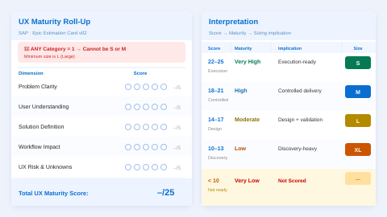

UX Design Lead @ SAP
Stephan Albrecht
Product Design leader with 17 years of experience designing complex enterprise and multi-workflow SaaS products across cloud platforms, operations, payroll, logistics, financials, life sciences, and industry solutions.
Currently leading UX for SAP CALM, shaping platform-level experiences across six agile teams. Experienced in systems thinking, UX strategy, research-informed product development, design systems, and AI-enabled product opportunities.
How I Work
Work organized by design process — not by project or client. Across the Problem Space I partner with Product Management to frame the right problem before committing to solutions. Across the Solution Space I work with Engineering to validate concepts early and deliver with quality. Each phase shows what I produce, how I think, and where I take the lead.
Making uncertainty visible
I turn fuzzy briefs into focused design problems. Before committing to solutions I map what is known, what is assumed, and what must be learned — whether through field research, domain immersion, or structured readiness frameworks.

UX Maturity Scorecard & Quarterly Tracking
SAP · CALM · In Progress
Epics were committed to quarterly planning without design readiness — causing late scope changes and rework. I created a 5-dimension readiness framework scored per epic, then defined 5 tracking metrics to measure whether it improves planning quality over time.
Field Research & Contextual Inquiry
Baur · High Voltage Measurement Systems
BAUR's diagnostic devices were designed for expert use only — but a strategic shift toward service technicians in the field required understanding entirely new usage contexts: vehicle cabs, substations, outdoor environments. Led contextual inquiries and field research sessions with cable-testing engineers in real operating environments.
Domain Research — Regulated Industry
SAP · iCTSM · Clinical Trial Supply Management
Clinical trial supply chains involve tight regulatory compliance, global logistics coordination, and risk-critical decisions around drug supply. Before designing a single screen, I immersed in the domain: GxP compliance requirements, blinding and randomisation protocols, and the operational reality of clinical supply managers.
Turning signal into direction
I extract patterns from research that make design decisions defensible. Synthesis turns raw data — user interviews, heuristic evaluations, analytics — into clear problem statements, frameworks, and evaluation criteria.
AI Agent Output Evaluation Framework
SAP · CALM · Joule
Developed a 6-dimension benchmark framework (Value Alignment, Output Completeness, Format Accuracy, Cognitive Load, Trust, and Interaction Efficiency) and applied it to assess Joule's service result guidance outputs — turning qualitative review into a structured quality assessment before release.
Workflow Analysis & Problem Framing
SAP · S/4HANA Banking for Complex Loans
Analysed 24 existing Fiori applications to map the navigational load imposed on bank relationship managers: up to 12 separate screens per transaction, with frequent context-switching and data loss. This synthesis surfaced the core architectural problem that guided all redesign decisions.
Shaping solutions before committing to them
I design for outcomes, not screens. Ideation means exploring the solution space — generating concepts, testing directions with low-fidelity artefacts, and converging on an approach that is both user-centred and technically feasible before full design investment begins.
AI-First Enterprise UX Strategy
SAP · CALM · Platform Level
Defined AI-assisted workflow concepts across SAP CALM — including the first agentic assistant prototypes. Shaped trust-first patterns for explainable automation across planning, lifecycle, and service workflows.
Intelligent Automation Concepts
Zeiss · SmartZoom Microscopy
Developed UX concepts for Zeiss SmartZoom microscopy focused on intelligent automation of image acquisition. Explored models reducing operational complexity while preserving expert control.
New Interaction Models for the Field
Baur · Mobile & In-Vehicle
Conceived new interaction models for BAUR's in-vehicle diagnostic app and Android companion — replacing desktop-derived paradigms with patterns for gloved use and time-critical field conditions.
Learning before shipping
I test assumptions, not aesthetics. Validation means putting designs in front of real users before development investment is locked in — through usability studies, prototype testing, heuristic evaluation, and structured benchmarking.
Prototype & Concept Validation
SAP · iCTSM · Life Sciences
Ran multiple rounds of moderated concept validation with clinical supply managers. Each round produced prioritised findings fed directly into design iteration. Validated patterns later reused across the clinical domain.
Baseline Usability Studies
SAP · CALM · ISD Hub
Supervised baseline usability studies to establish measurable task success benchmarks. Results informed redesigned navigation and AI-assisted entry points — moving the team from opinion-based to evidence-based decisions.
Design that ships and scales
I close the gap between concept and working product. Delivery means production-ready specs, design system alignment, close engineering collaboration, and scalable component patterns — across enterprise platforms, embedded systems, and mobile.
UX Product Development Process
SAP · CALM · ISD Hub
Defined and rolled out a structured UX delivery process across six scrum teams — covering epic intake, UX story creation, Definition of Done criteria, and handoff. Gave design work a consistent place in the planning cycle.
24-Application Fiori Suite
SAP · S/4HANA Banking for Complex Loans
Delivered UX leadership across multiple Fiori applications for S/4HANA's Complex Loans suite. Reduced navigational steps and eliminated context-switching errors for loans management.
Cross-Platform Design System
Bosch · Smart Home Division
Reconciled iOS HIG and Material Design into a unified Bosch interaction language. Built a shared component library reducing handoff time and enabling faster feature parity across both platforms.
Private Wealth iOS Application
BBVA · Private Wealth Management
Designed portfolio overview, trade flow, and risk indicator screens applying iOS native patterns. Data visualization prioritized scannability and confidence — distinctly separate from BBVA's retail offering.
Closing the loop from decision to outcome
Good design is measurable. I close the loop between design decisions and business or user outcomes — through tracking metrics, qualitative signals, and organisational learning that improves future work.
Research Informing Strategic Roadmap
Baur · High Voltage Measurement
Field research findings from contextual inquiries directly influenced BAUR's strategic product roadmap — validating the decision to extend to mobile and in-vehicle form factors. Observation in the field ended with measurable business direction change.
Analytics-to-Design Synthesis
SAP · CALM
Implemented usage tracking within SAP CALM to capture behavioral signals at scale. Synthesized quantitative patterns alongside qualitative usability findings to define meaningful success metrics — creating a shared language between UX, product management, and engineering.